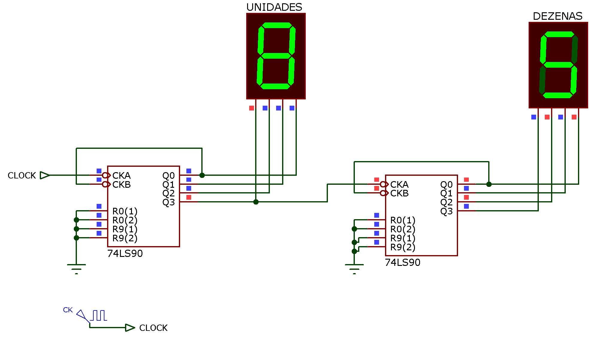
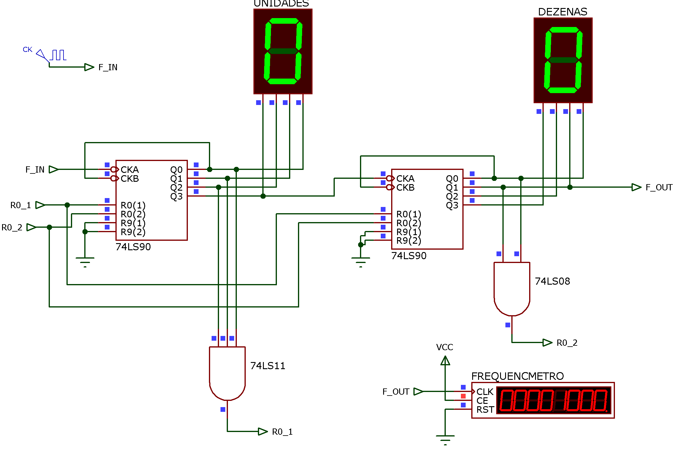
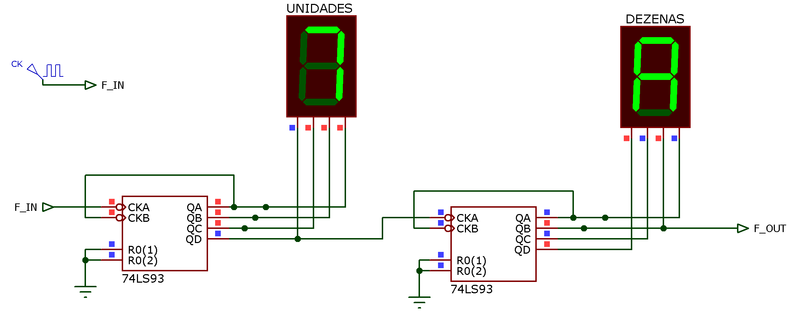
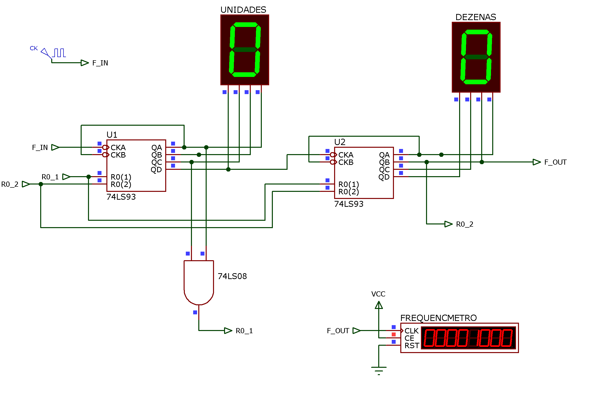
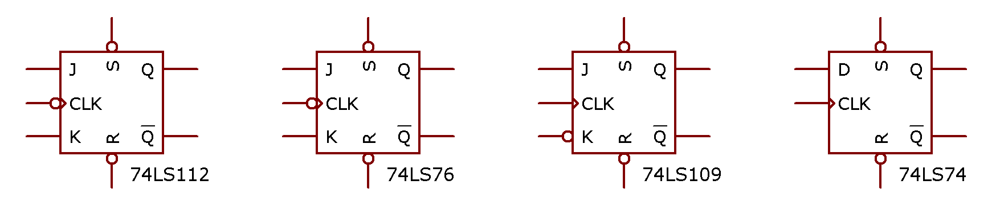
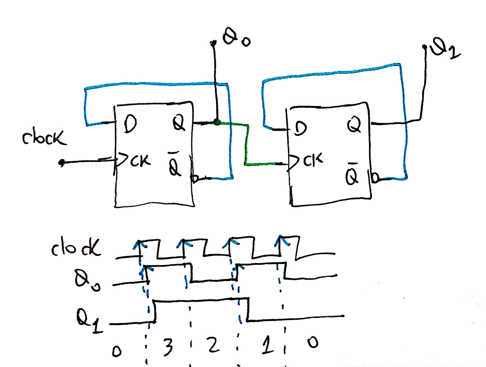
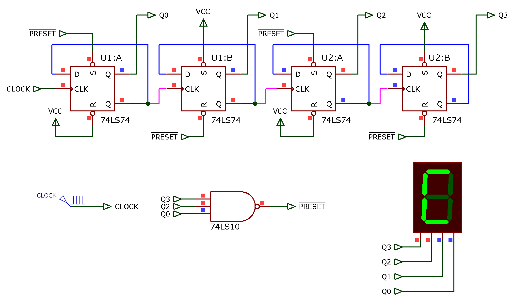
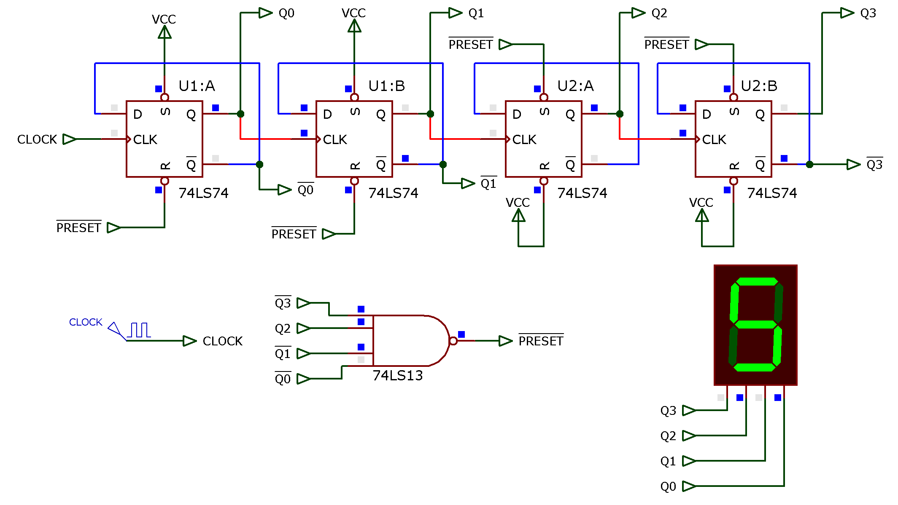

Aula de revisão de 04/05/2020.
Exercício_1: Projetar um divisor de frequencia por 37...
Note: 37/2=18,5; 37/4=9,25; 37/5=7,4 \(\leftarrow\) parece ser um número primo (indivisível)
Soluções: 2 opções: usando CI 7490 (Contador Decimal) ou 7493 (Contador Binário)...
a) opção pelo 7490:
\(37_{(10)}=?_{{2,BCD}}\)
\(3_{(10)}=0011_{(2)} \leftarrow \text{Dezenas}\)
\(7_{(10)}=0111_{(2)} \leftarrow \text{Unidades}\)
Desenhando circuito: 2 x CI's 7490, em cascata, inicialmente contando de 0 à 99:

Este circuito deve ser adaptado para contar de 0 até 36, com recycle ("reset") ocorrendo quando atinge o número 37. Então é estabelecido um "barramento" de reset entre as pastilhas para forçar um reset conjunto ou simultâneo das 2 pastilhas apenas quando a contagem atinge o número 37.
O sobre o ponto de saídan, \(F_{OUT}\), normalmente é o bit + significativo associado com o limite de contagem realizado. Neste caso:
Saída \(F_{OUT}\): saída \(Q_1\) do contador de dezenas.
O circuito final fica então:

Note o ponto da frequencia de entrada: \(F_{IN}\) e o ponto de saída (frequência de entrada dividida por 37), \(F_{OUT}\). \(F_{IN}\) está conectado ao sinal de clock ajustado para 37000 Hz ou 37 KHz. Sendo assim, o frequencímetro que está conectado ao ponto \(F_{OUT}\) está mostando como esperado: 1000 Hz.
Cálculo do Duty-cycle:
Segue tabela resumida da sequencia de contagem:
Dezenas | Unidades
Q3Q2Q1Q0 | Q3Q2Q1Q0 | Obs
0 0 0 0 | 0 0 0 0 | Pulso inicial (reset ou inicialização)
0 0 0 0 | 1 0 0 1 | final contagem Unidades <-- 10 pulsos de clock (F_IN)
0 0 0 1 | 0 0 0 0 | inicio da contagem em 10
0 0 0 1 | 1 0 0 1 | contagem atinge No. 19; passam-se + 10 pulsos de clock
0 0 1 0 | 0 0 0 0 | contagem atinge No. 20
0 0 1 0 | 1 0 0 1 | congagem atinge No. 29 <-- + 10 pulsos de clock
0 0 1 1 | 0 0 0 0 | Começa a aparecer o número 30 no display
0 0 1 1 | 0 1 1 0 | Contagem normal até número 36
0 0 1 1 | 0/0 1/0 1/0 1/0 | alcança o 37 e ocorre recycle (reset)Analisando a tabela anterior e considerando que \(F_{OUT}\) é "coletado" em Q1 do CI de Dezenas:
Q1='1' durante o tempo em que display de dezenas mostra "2": 10 pulsos de F_IN;
Q1='1' durante + 7 pulsos de cock de F_IN (display): 30 ~ 36 (7 estados)
total: Q1='1' durante 10+7=17 pulsos de clock (F_IN)
\(\text{Duty-cycle}=\dfrac{17}{37}\times 100\%=45,96\%\)
b) Solução usando 7493
O 7493: contador binário, então temos que converter o número \(37_{(10)}\) para base binária ou hexadecimal. Mais prático (e rápido) converter para hexadecimal e depois para binário (lembrando que cada algarismo hexadecimal = 4 bits):
37 / 16
-32 2
---
5\(37_{(10)}=25_{(16)}=0010:0101_{(2)}\).
1a-parte: diagrama elétrico do contador binário usando 2 x 7493: conta de 0 até 255 ou de 0 até FFh.

O circuito divisor por 37 usando 7493 fica então:

Note que a figura já mostra o resultado da simulação para \(F_{IN}=\) 37000 Hz, e então: \(F_{OUT}=\) 1000 Hz como mostra a figura.
Calculando Duty-cycle:
U2 | U1. <-- CIs responsáveis pela contagem (cascateados)
Q3Q2Q1Q0 | Q3Q2Q1Q0
0 0 0 0 | 0 0 0 0 = 0 <-- instante inicial
0 0 0 0 | 1 1 1 1 = F <-- passaram-se 16 pulsos de F_IN
0 0 0 1 | 0 0 0 0 = 0 <-- contagem: 10h
0 0 0 1 | 1 1 1 1 = F <-- congagem: 1Fh (+ 16 pulsos de F_IN)
0 0 1 0 | 0 0 0 0 = 0 <-- congagem: 20h (1)
0 0 1 0 | 0 0 0 1 = 1 <-- contagem: 21h (2)
0 0 1 0 | 0 0 1 0 = 2 <-- contagem: 22h (3)
0 0 1 0 | 0 0 1 1 = 3 <-- contagem: 23h (4)
0 0 1 0 | 0 1 0 0 = 4 <-- contagem: 24h (+ 5 pulsos de F_IN)
0 0 1 0 | 0 1/0 0/0 1/0 <-- contagem: 25h/Recycle Como \(F_{OUT}\) é coletada na saída mais sgnificativa da contagem: \(Q_1\) (Proteus: \(Q_B\)) de U2, percebemos (pela tabela anterior) que \(Q_{1|\text{U2}}=\)'1' durante apenas 5 pulsos de \(F_{IN}\), então:
\(Duty-cycle=\dfrac{5}{37}\times 100\%=13,51\%\)
Exercício_2: Projetar um contador (assíncrono) capaz de realiar a seguinte sequencia de contagem: \(5 \rightarrow 6 \rightarrow 7 \rightarrow 8 \rightarrow 9 \rightarrow 10 \rightarrow 11 \rightarrow 12 \rightarrow 5 \rightarrow 6 \rightarrow etc..\).
Solução:
Notamos que:
\(5_{(10)}=0101_{(2)}\)
\(12_{10}=1100_{(2)}\)
São necessários 4 bits para representar as contagens \(\Rightarrow\) 4 FF's
Circuito:
Resumo:
Detectar quando contagem alcança: \(13_{(10)}\) e realizar um preset.
O Recycle ocorre quando a estrutura alcança número \(Q_3Q_2Q_1Q_0=13_{(10)}=1101_{(2)}\), isto implicar usar uma porta AND(3) ou NAND(3), detectando quando Q3='1', Q2='1' e Q0='1', ou seja:
\(\text{Preset}=Q_3 \cdot Q_2 \cdot Q_0\)
Quando circuito alcança o No. 13 não é o reset o desejado, mas um "preset" em \(Q3Q2Q1Q0=5_{(10)}=0101_{(2)}\).
"Deduzir" circuito de contador crescente assíncrono conforme o FF à ser adotado: borda de subida ou de descida. Algumas opções de FF's:

Supondo que se adote o CI 74LS74 (FF-D / Borda subida), e supondo que o circuito abaixo conta crescente... necessidade de verificar por formas de onda:

O "chute" de conectar \(q \rightarrow CK\), neste caso, forma um contador decrescente, então:
Circuito final:

Exercício_3: Projete um contador assíncrono que realize esta outra sequencia de contagem: \(12 \rightarrow 11 \rightarrow 10 \rightarrow 9 \rightarrow 8 \rightarrow 7 \rightarrow 6 \rightarrow 5 \rightarrow 12 \rightarrow 11 \rightarrow etc...\)
Solução:
Necessários 4 x FF's e estrutura contador assíncrono decrescente.
O preset ocorre quando \(Q3Q2Q1Q0=4_{(10)}=0100_{(2)}\):
\(\text{Preset}=AND(\overline{Q_3}, Q_2, \overline{Q_1}, \overline{Q_0}))\).
\(\text{Preset}=\overline{Q_3} \cdot Q_2 \cdot \overline{Q_1} \cdot \overline{Q_0}\)
Note: aqui não basta apenas detectar Q2='1' porque como a contagem é decrescente, este bit permanece em '1' durante a parte intermidiária da contagem e desta forma, o preset seria realizado no momento incorreto.
Note a sequencia de contagem assumida neste caso:
Binário |
Q3Q2Q1Q0 | Dec
0 0 0 0 | 0 <-- supondo que circuito inicia com FF's resetados.
1 1 1 1 | 15
1 1 1 0 | 14
1 1 0 1 | 13
1 1 0 0 | 12 <-- início da faixa desejada
1 0 1 1 | 11
1 0 1 0 | 10
1 0 0 1 | 9
1 0 0 0 | 8
0 1 1 1 | 7
0 1 1 0 | 6
0 1 0 1 | 5 <-- fim da faixa desejada
0 1 0 0 | 4 <-- ponto para gerar sinal de PRESETTambém não podemos apenas detectar \(Q2Q1Q0=100_{(2)}=4_{(10)}\), porque esta mesma sequencia binária é assumida quando o circuito é forçado para o número 12 (\(=Q3Q2Q1Q0=1100_{(2)}\)); note que apenas Q3 é diferente entre a combinação binária para 4 e 12. Se esta condição (preset quando contagem atinge \(Q2Q1Q0=100_{(2)}\)) fosse adotada, o circuito ficaria estacionado no ponto de contagem \(=12_{(10)}=1100_{(2)}\) -- no PROTEUS gera um erro de "race condition". Então necessariamente neste caso precisamos de uma porta AND ou NAND de 4 entradas!
Então devemos ficar atentos à sequencia de contagem e ao "padrão" de bits à serem detectados.
Neste caso o preset força os FF's em \(Q3Q2Q1Q0=12_{(10)}=1100_{(2)}\).
Supondo que se use os mesmos FF's do exemplo anterior, teremos o seguiinte circuito:

Prof. Fernando Passold, em 04/05/2020